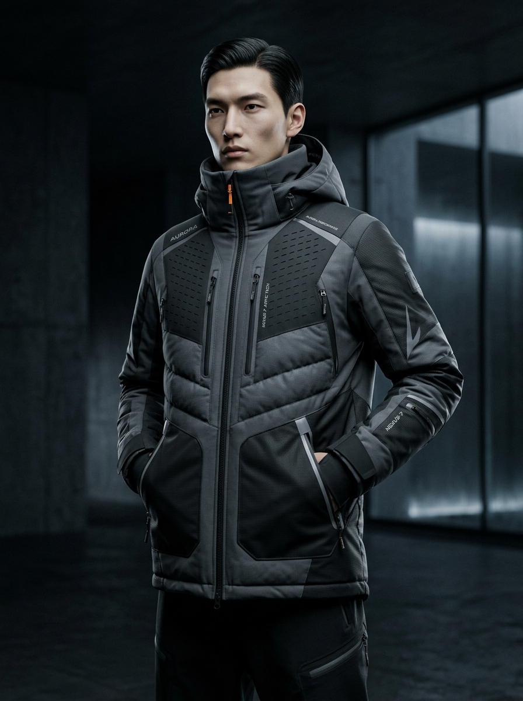

Thiết kế đầm dạ hội
A comprehensive exploration of high-end evening wear, focusing on complex pattern development, intricate draping, and flawless 3D simulation to ensure perfect fit and elegant movement.

Project Overview
The objective of this project was to engineer a complex evening gown that balances avant-garde aesthetics with structural feasibility. The design required meticulous pattern grading and advanced 3D simulation to evaluate the drape of heavy silk and tulle without physical prototyping. Our goal was to create a production-ready tech pack that eliminates ambiguity during the manufacturing phase.
Core Objectives
Pattern Development
Fit Optimization
Tech Pack Creation
Production Readiness
Workflow & Process
1. Research & Concept
Analyzing fabric properties and structural requirements for evening wear silhouettes.
2. Pattern Drafting
Creating initial block patterns in Gerber Accumark with precision dart manipulations.
3. CLO3D Simulation
Virtual sewing and simulation to test physical fabric drape without material waste.
4. Tech Pack Creation
Generating comprehensive POMs, BOMs, and construction diagrams for factory handoff.
Design Gallery
Technical Details
Challenges & Solutions
Challenge: Fabric Tension on Bias
The silk charmeuse stretched unpredictably along the bias during 3D simulation, causing the hemline to drop unevenly and creating unwanted tension across the bust darts.
Solution: Pattern Restructuring
Adjusted the fabric physical properties in CLO3D to accurately reflect silk's shear resistance. Added invisible stay-tape to the digital pattern's neckline and armholes to stabilize the bias seams before rendering the final fit.
Final Outcome
- Production-ready Pattern DXF
- Comprehensive Tech Pack
- Zero-Waste Digital Prototyping
- Flawless 3D Fit Verification
Lessons Learned
This project reinforced the importance of understanding physical fabric mechanics before translating them into digital environments. Successfully simulating bias-cut garments required deep adjustments to the default physics properties in CLO3D, emphasizing that digital tools are only as effective as the technical designer's understanding of real-world materials.